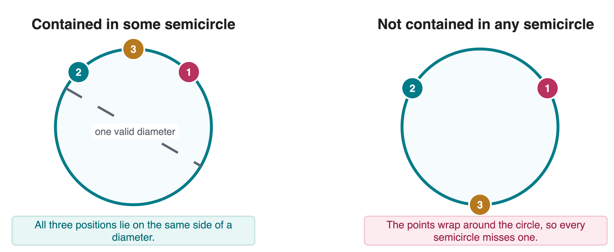
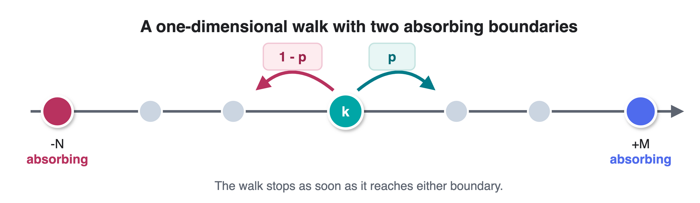
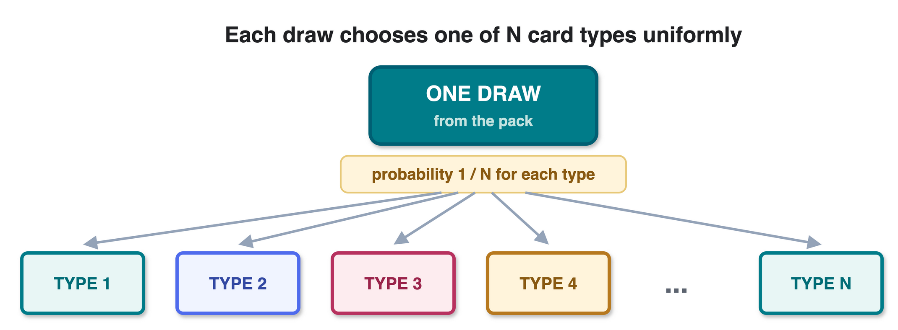

Homework 4: Probability in Motion
Geometric probability, absorbing random walks, and coupon collection
hw4submission.pdf
Upload one PDF named hw4submission.pdf to Canvas. Define any event or random variable you introduce, justify the main steps of each derivation, and simplify final expressions when possible. No starter download is required for this written assignment.
Background: three reusable probability ideas
Each problem looks different, but each is built around a standard way of organizing uncertainty.
- Symmetry and anchoring: for points placed uniformly on a circle, rotating the entire configuration does not change its probability. A continuous configuration can often be counted by anchoring a candidate event at an observed point.
- First-step analysis: condition on the next transition, then express an unknown probability or expectation in terms of neighboring states. Absorbing states supply the boundary values needed to solve the recurrence.
- Waiting-time stages: divide a collection process into stages. If a stage succeeds independently with probability \(s\) per draw, its waiting time is geometric with mean \(1/s\). Linearity of expectation then allows the stage means to be added even when the stage durations are not independent.
The main identities you may use are
\[ \Pr(A)=\sum_i \Pr(A\mid B_i)\Pr(B_i), \qquad E\!\left[\sum_i X_i\right]=\sum_i E[X_i], \qquad E[G]=\frac{1}{s}\ \text{for }G\sim\operatorname{Geometric}(s). \]
For every derivation, name the event or random variable before manipulating it. This makes it clear when you are using a probability, an expectation, or a boundary condition.
1. Ducks in a circular pool
There are \(n\) ducks on the circumference of a circular pool. Each duck’s position is selected independently and uniformly at random. A closed semicircle may be rotated to any orientation after the positions are observed. Events in which a duck lies exactly on a chosen boundary have probability zero and do not affect the answer.

- For \(n=2\), compute the probability that all ducks are contained in some semicircle.
- For \(n=3\), compute the same probability.
- For general integer \(n \ge 2\), derive the probability that all \(n\) ducks are contained in some semicircle.
Your general argument should explain why the candidate semicircle can be anchored at one of the observed positions and why the relevant anchor events do not overlap except on probability-zero configurations.
2. Random walk with absorbing barriers
A walker starts at integer position \(k\) on the interval \([-N,M]\), where \(M,N\) are positive integers. At every step, the walker moves right with probability \(p\) and left with probability \(q=1-p\). Reaching \(-N\) or \(M\) ends the walk.
Let
\[P_k = \Pr(\text{reach } M \text{ before } -N \mid X_0=k).\]
For Parts 1-3, assume \(0<p<1\).

- Derive the recurrence for \(P_k\) and state both boundary conditions.
- Express \(P_{-N+1}\) and \(P_{-N+2}\) in terms of \(p\) and \(P_{-N+3}\), assuming \(N \ge 3\).
- Solve for \(P_k\) for every \(-N \le k \le M\). Handle the fair-walk case \(p=\tfrac12\) separately from \(p\ne\tfrac12\).
- Evaluate \(P_2\) when \(p=0.6\), \(M=10\), and \(N=6\).
- Evaluate \(P_2\) when \(p=0.4\), \(M=10\), and \(N=6\).
For each numerical answer, give at least four decimal places and briefly compare the two biased walks.
Your closed form should produce \(P_{-N}=0\) and \(P_M=1\). In the fair case, the answer should be linear in the starting position.
3. Coupon collector
There are \(N\) distinct card types, with \(N \ge 1\). Each independent draw produces one of the \(N\) types uniformly at random. Duplicates are kept but do not increase the number of distinct types collected.

- What is the probability of drawing one specified type on a single draw?
- What is the expected number of draws until that specified type appears for the first time?
- If exactly \(k\) distinct types have already been collected, what is the expected number of additional draws until a new type appears?
- Derive the expected total number of draws \(E[T]\) required to collect all \(N\) types. Express the result using the harmonic number \(H_N\) and define \(H_N\).
What a complete solution includes
- A clearly named event or random variable for each problem.
- A derivation, not only a remembered formula.
- Boundary conditions for the random walk and the \(p=\tfrac12\) special case.
- Exact expressions before decimal approximations.
- A short sanity check for every final result.